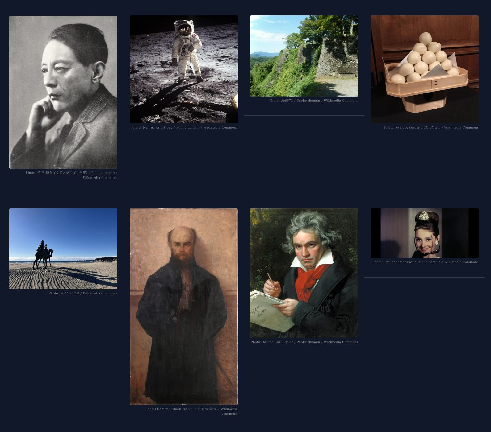
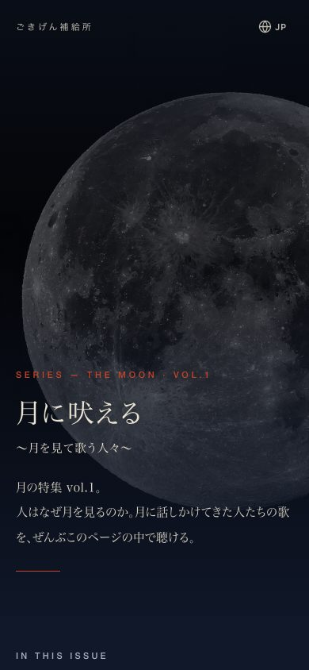

実測: 2026-10-18 19:10 headless Chromium（無音）幅390px section.cw-fk = 8 naturalWidth = 740, 760, 960, 960, 960, 960, 900, 960（8/8 表示） 壊れ画像 = 0 ／ JSエラー = 0 HTML 122,244 bytes（基準 106,887 → 17章＋写真8枚を理由に更新）


| 確認項目 | 結果 |
|---|---|
| 雰囲気の静止画 8枚が表示される（headless実測：8/8 naturalWidth>0・壊れ画像0） | 8/8 |
| 写真のクレジット（撮影者／ライセンス／Wikimedia Commonsへのリンク） | 8/8に表示 |
| 見た目の統一 unify_look --check（このページ） | OK |
| 物語の関所 magazine_monogatari_kanmon --all | PASS |
| 後退の関所 koutai_kanmon --check-files（基準は17章＋写真8枚を理由に更新） | PASS |
| 再生ボタン1回で iframe（autoplay=1）／JSエラー0 | OK |
| Lovable 公開ボタン | 鍵切れ（invalid_grant）で押せず・公開待ち（Dispatch） |